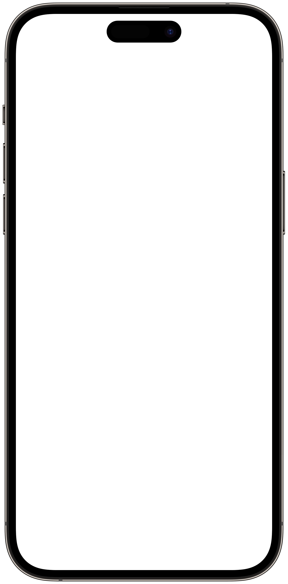

<app-debug-tools *ngIf="devMode"></app-debug-tools>

<div class="phone">
    

      
    
    <router-outlet></router-outlet>

    <p class="hour">{{time | date: 'HH:mm'}}</p> <!--- a syncr tt les min --->

    <!-- <app-home-screen></app-home-screen> -->
    <!-- <app-dynamic-island></app-dynamic-island> -->
</div>